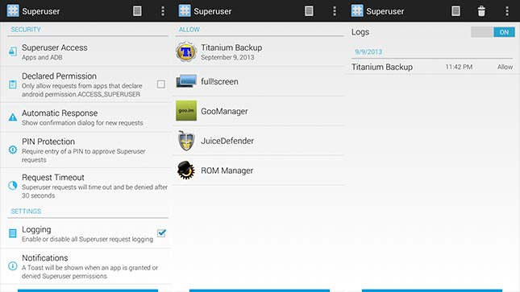

Top Ten Android Apps for Rooted devices
Number 10 on our list is Full!Screen. This app takes away the soft key at the bottom of your device as well as the notification bar. The reason for this is simple. Without soft keys, the Galaxy Nexus screen was 4.65-inches. With the soft keys and the status bar, it was closer to 4.3. This app gives you that extra space back.
When you activate it, everything disappears and you get a back button
on the bottom left and a home button on the bottom right. Both of these
buttons can be customized a number of ways. You can add a pie menu,
swipe gestures, and long press functions to turn these two little keys
into everything you need to get rid of those top and bottom bars.
Next up is the official app for goo.im called GooManager. This app is a one way ticket to download and install anything you can find on goo.im. It has an easy to use interface and can help you find a lot of files that you may otherwise have to Google Search to find.
Some examples include ROM and Gapps downloads for your device. You
can also use it to install TWRP Recovery if you need a custom recovery,
and use the interface to reboot to recovery or flash ROMs without using
the recovery.
Eighth on our list is a very useful root app called Tasker. This powerful application can make your phone do pretty much anything whenever you need it to. It's a vague explanation but pertinent because it can really make your phone do almost anything.
So here's how it works. You create a task or a scene, then you define
what those tasks and scenes do. It's highly recommended to read the
online FAQs before attempting because there is a steep learning curve
involved. A fun use for this app is using the Tasker add-on that some
NFC apps have to make your NFC tags do things you created in Tasker.
Speaking of root apps that make your phone do wonderful things, number 7 on our list is Juice Defender Ultimate. This root app can turn your phone into a battery saving machine, squeezing valuable hours out of an otherwise lackluster battery performance.
It does this by tweaking your connectivity options. For root users,
you can also tweak your CPU settings as well as a number of others. When
everything is combined, Juice Defender can save you hours of battery if
used right and it's already being used by millions of people.
Number 6 could be considered an Android relic. It's ROM Manager and for years it's been one of the best ways to install ClockworkMod Recovery. ROM Manager has a number of features and is pretty easy to use. This has made it onto more than one essential root apps list.
So here is a quick list of things you can do with ROM Manager. Do
note that many of these require the pro version. You can browse ROMs for
your device, flash ClockworkMod Recovery and, for a nominal fee,
ClockworkMod Touch Recovery, create Nandroid backups, and more.

Next on our list is the Superuser app by Koushik Dutta, who is the same guy who developed number 6, ROM Manager. Superuser is a basic app that literally all root users should have. It serves a very simple, yet very important purpose of being the gateway for apps to gain root.
So here's what this app, and apps like it do. When you open a root
app you get that now iconic screen asking if you want to give the app
root access. That is this app in action. With it you either give or deny
root permission to other apps. With this one, you can change themes,
keep logs, and turn root on or off for both apps and ADB.
Fourth on our list is ROM Toolbox Pro. This is one of the very few all-in-one solutions for root users. It has a bunch of features that all root users could find useful and it's even designed with Android in mind. That means all you #holoyolo fans will appreciate it.
There are simply too many things this app can do and we only have a
limited time here so I'll tell you the highlights. With this you can
download ROMs, install recoveries, manage your applications, and it even
comes with a built in root enabled file browser. Count in the stuff for
more advanced users like kernel tweaks, and you have a valuable app for
any root user.
We have reached our top 3 and the first up here at the top is Greenify and it is truly a must-have application as a root user. Sometimes applications run away with themselves and you're the one who suffers. Apps can wake up devices, drain battery, and cause all sorts of problems. Greenify fixes that.
So here is how it works, the app will analyze your applications and
tell you which ones are running, were recently run, and how many times
they ran. Using this info, you can put apps into hibernate mode where
they will only work when you actually use them. This can save you hours
of battery life and effectively solves a long time problem of rogue apps
keeping your phone awake.
Root Explorer uses root access to let you browse files on your entire device.
For root users, this is an essential task. There are a plethora of
activities that require you rummaging through the root of your device
and Root Explorer helps you do it. It has a clean interface, plenty of
features, and is one of those essential tools for all root users.
There simply isn't a better application out there for root users. For those new to rooting, Titanium Backup is the essential app for dealing with your applications.
So here are the two biggest tasks this app accomplishes. You can freeze apps, preventing them from running, and backup apps which anyone who has experience with rooting will tell you is important. It then offers over 3 dozen other features, like syncing backups to cloud storage, uninstalling system apps –which is essential to get rid of bloatware- and multi-user support.